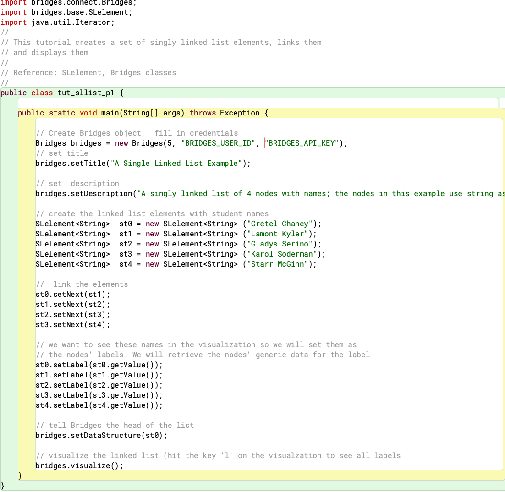
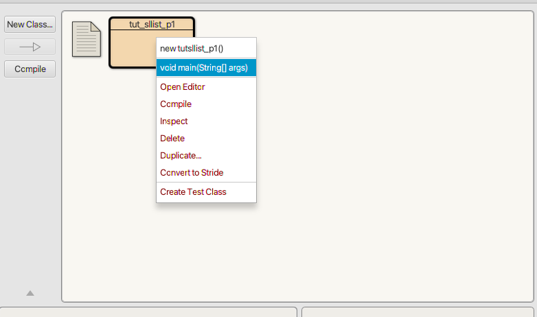

Step 1: Install BlueJ
- If you do not have BlueJ
installed, download it from the
BlueJ site
and install it on your computer -- these instructions were written
for version 4.2.2.
- BlueJ requres Java JDK to be installed, else you will
get the error "BlueJ could not find any Java systems.
A JDK must be installed to run BlueJ."
Verification: Open the BlueJ application and you should see
the main object window.
|
Step 2: Create Bridges Account
- Visit the Bridges
main page
and create yourself an account by clicking the login button
on the top navigation bar. Please ensure that
your user id is devoid of spaces, as it will be
used as part of the web link for your projects.
After creating your account, click
on your profile name in the upper right corner to
view your profile. Once in your profile,
you will see your
API Key; you will need this API key in part 2
of the tutorial(as well as in every BRIDGES program
you write).
|
Step 3: Create a Java Project
- Open Project-->New Project
- Follow the Project menu directions and create a project
at a convenient location. This will create a new folder
on your drive.
- Example on right shows a class named sllist that
has been created.
|

|
Step 4: Import Jar File into project
- Download the Bridges.jar file from
Bridges Website (Downloads button) and save it somewhere convenient
on your drive.
- Click on BlueJ-->Preferences and select the Libraries tab;
- Click the Add File button, to add the downloaded BRIDGES
Jar file. You will need to quit and restart BlueJ for the library to
be loaded!
| 
|
Step 4: Create, Compile, and Run a Bridges Program
- We will illustrate a Singly Linked List Bridges program
here.
- Go to this
BRIDGES Tutorial and copy/paste the Java program into
the main window by creating a class. Set the class name in the IDE
to match the class name in the program
- Set an assignment number, and your credentials in the line that
creates the Bridges object at the beginning of the program.
- Compile the program by clicking on the compile button.
- To execute the program, right click on the project and
click on the the main() method.
- If the program compiles and executes without errors, a web link will be output that can be followed to see the linked list visualization.
|



|